k-Day 143｜不如吃個桃子吧
收拾好帳篷，到加油站小賣部消費，出門後和加油站警衛聊了一會兒，今天的目標是六十公里外的獨山子。
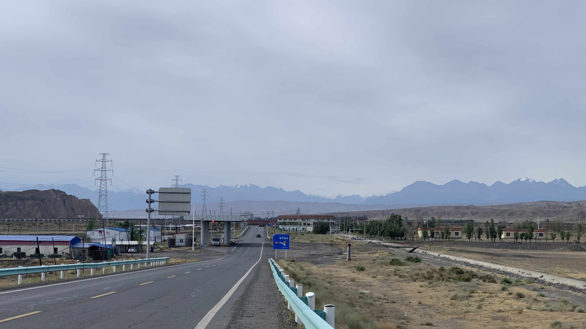
前面那排就是天山，從山腳下的獨山子往上爬升，需要翻過三座三千公尺以上的山口，完全沒辦法想像該如何做到這件事。
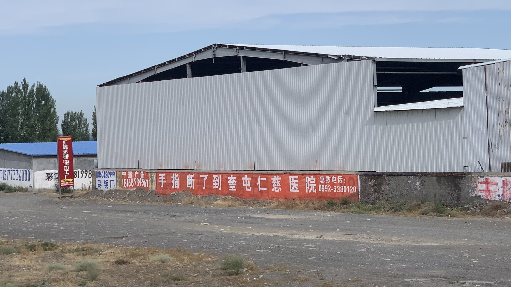
路邊不時出現紅底白字的標語，看到「手指斷了到奎屯仁慈醫院」的字樣直接漆在工廠的廠房外牆，相當不吉利。
不知道工廠員工每天上班看到這幾個字，心情會不會受到影響。不過若真發生什麼意外，跑到牆外就能取得急救電話，也不至於延誤治療？不知道政府和工廠有沒有為工人提供保險。
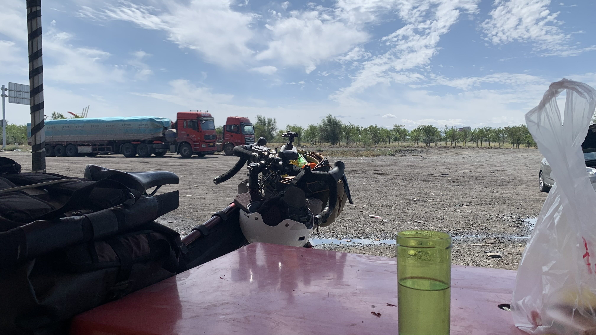
不到中午的時間，找了個有休息桌椅的商店休息。這幾天騎車只穿短褲，早上開始左小腿後方越來越刺痛，坐下來一看才發現已經被曬成煮熟龍蝦的顏色。
坐在棚子下，吃了一半雞蛋糕，補充一些電解飲料，還是好熱，趁小腿還沒烤熟，到前方的城鎮吃午餐。
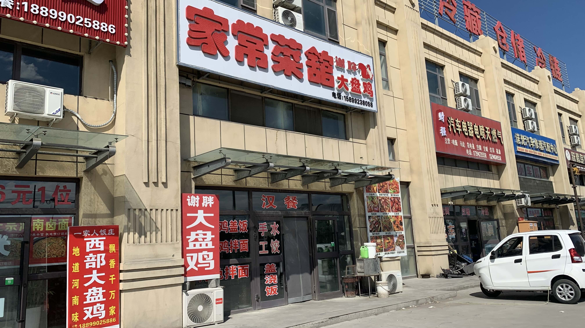
有間餐廳寫了「漢餐」，決定進去看看和不是漢餐的新疆餐廳有啥區別。
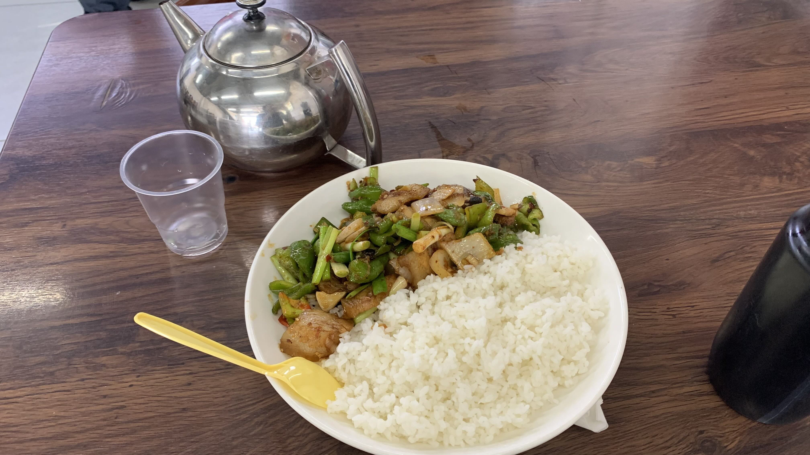
點了一份回鍋肉蓋飯，肉眼可見老闆給我添了許多飯，蔥段蓋不住的大片豬肉油油亮亮。這是我從遼寧一路到內蒙、新疆，第一次吃到菜肉比如此合理，份量口味最超值的一餐。
吃飯期間老闆遞給我一隻自己捲的煙，據說菸草是廣州買來的。氣味非常高級，看來老闆夫婦是有品味之人。
聊天時得知老闆的上一代有親人到了台灣，曾經試著聯繫幾次，但是沒有找到人。倒是老闆夫婦自己的人生更精彩，過去做生意到過許多地方，對中國各省份似乎都有些了解。最後從廣州一路開了幾千公里車，在此地開了一間餐館。
老闆娘謙虛地說自己不適合做生意，看著他們給旁邊的國軍客人添了滿滿的飯，再想想自己肚子裡的肉和飯菜，確實是慷慨了些。
倒是心裡產生一些疑問，此處客人在各種細節上看起來都有點鼻孔朝上的態度，不過還處於觀察階段，不好下評論。
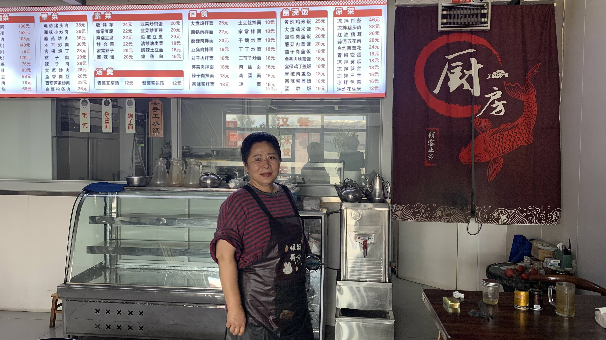
吃飽飯後老闆給了我一顆水蜜桃就去睡覺了。我一個人坐在座位上喝茶，上傳了兩天的日誌。離開前幫老闆娘拍了一張紀念照。
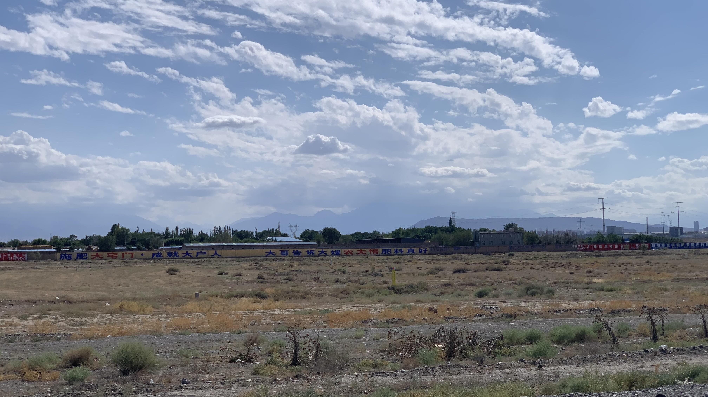
烏魯木齊到獨山子的國道兩旁都是這樣的工地氣息，路上的卡車對自行車也並不友善，然而這是外來者要爬上獨庫公路必經的路線。
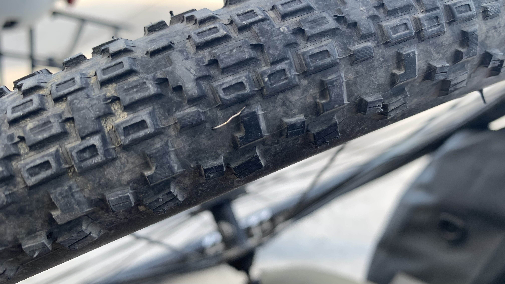
又爆胎了......。很明顯兇手是一根鐵絲。
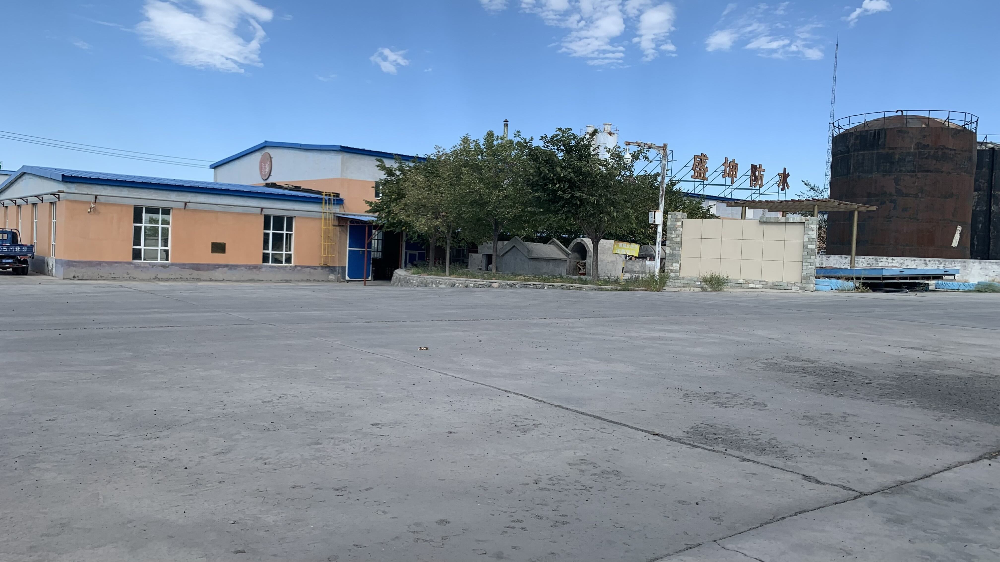
太陽過於猛烈，牽著二十三號轉進路旁的工廠，蹲在門口警衛亭旁邊的陰影拆車輪。爆掉的內胎跟前天換的後輪一樣是不合規格的25c，很乾脆地把它們倆塞進車包裡，今晚到了獨山子再丟掉它們減輕重量。
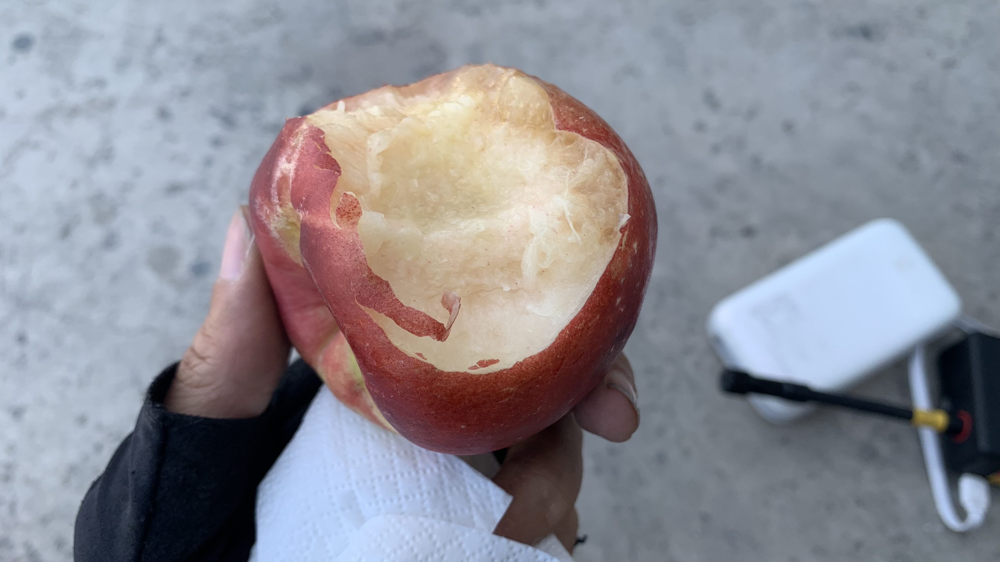
裝上前輪後坐在工廠門口的扶手椅上休息。「不如吃個桃子吧」，腦中出現這樣的聲音，餐廳老闆給的桃子很甜，三口就啃光了。
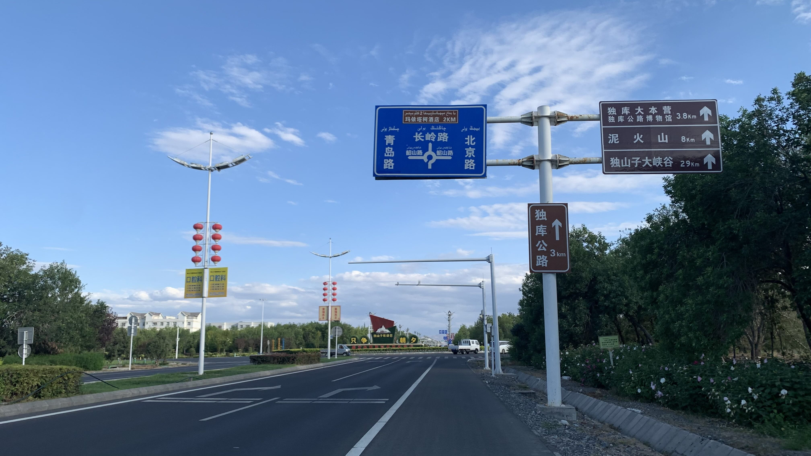
晚上八點左右，天還亮著，看到獨庫公路的路牌。
考量到之後的爬山路程，今天決定找一間由洗浴中心提供的房間洗澡洗衣好好休息。
相當遺憾洗浴中心的水竟然是冷的，等熱水時老闆娘站在我旁邊一直跟我說：「現在這水就可以洗了，你趕快洗。你沒有浴巾我給你一個，記得寫個好評。」洗衣服被收了15元，丟衣服操作時老闆一直站在我旁邊盯著，大聲問我到底要不要洗。最後離開時沒有寫評論，有預感點開評論區我會給個大大的差評。
今日花費：早餐 40、飲料 10 20、午餐 20、電解水 4、住宿 83、洗衣 15元